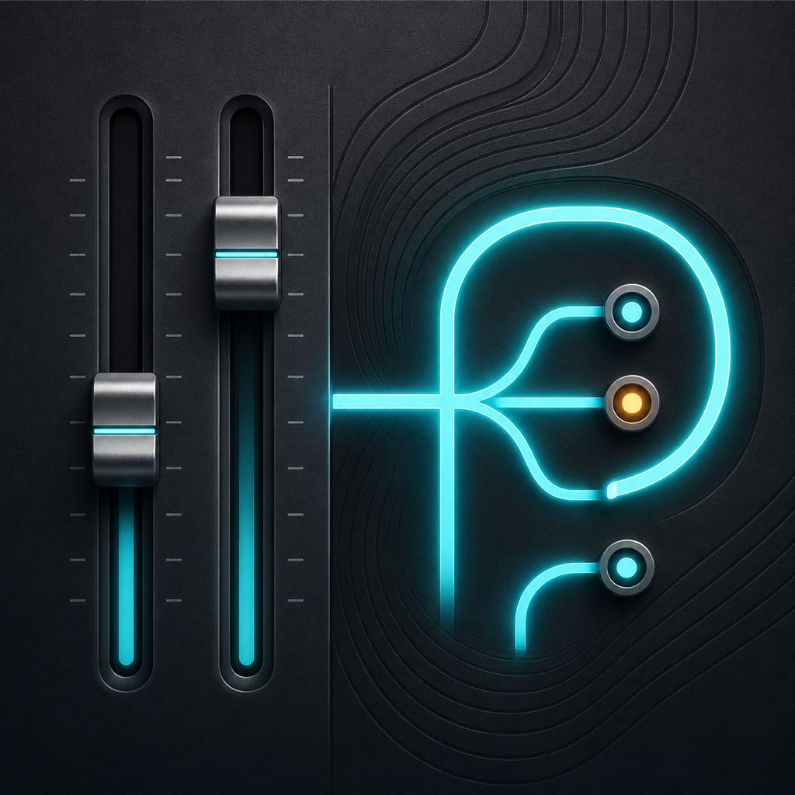
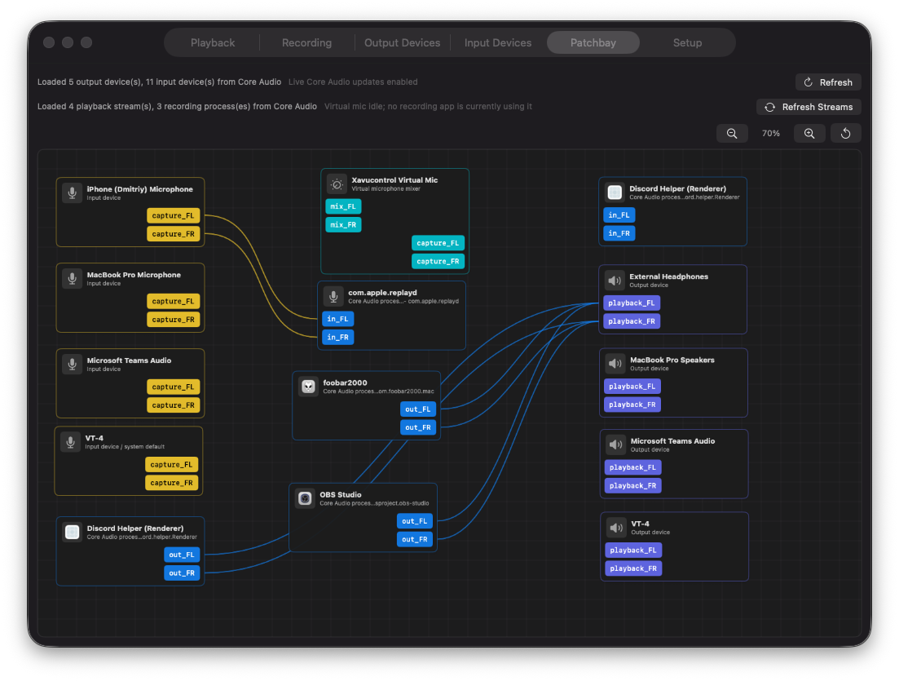
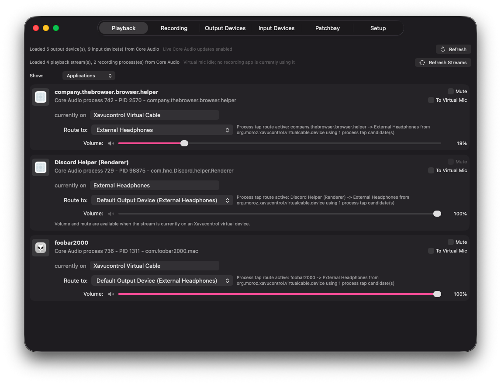
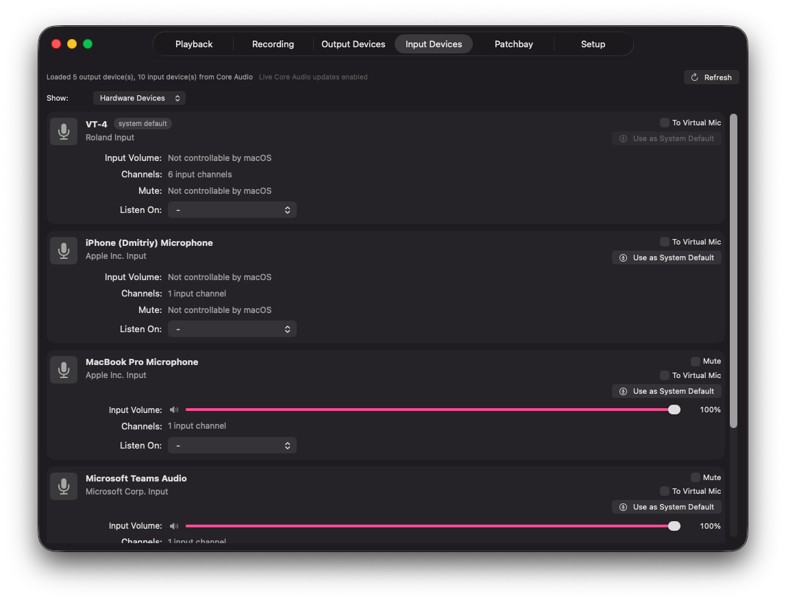
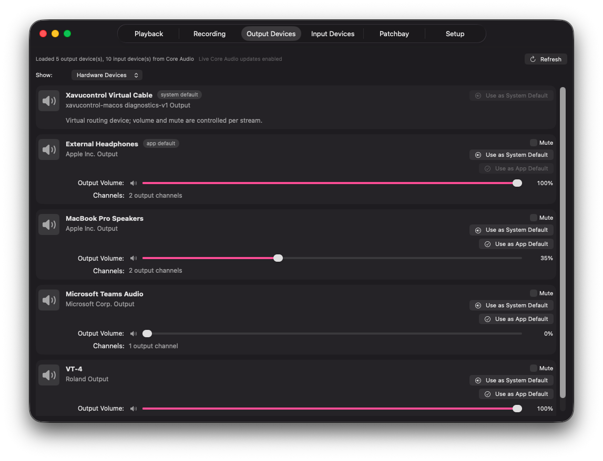
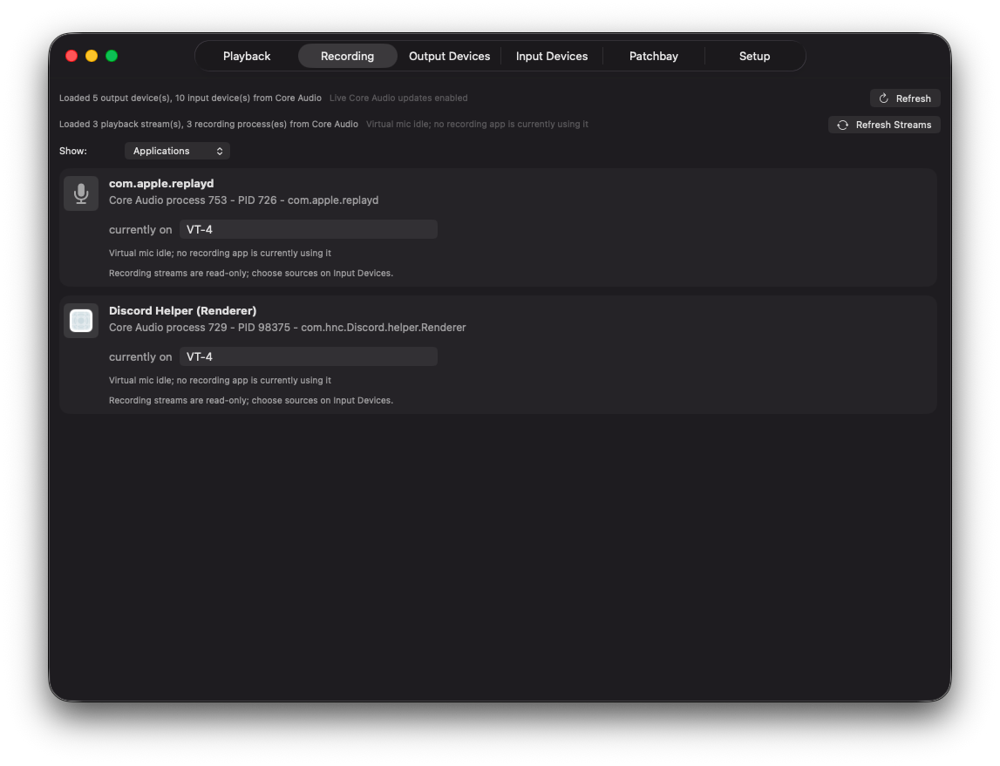
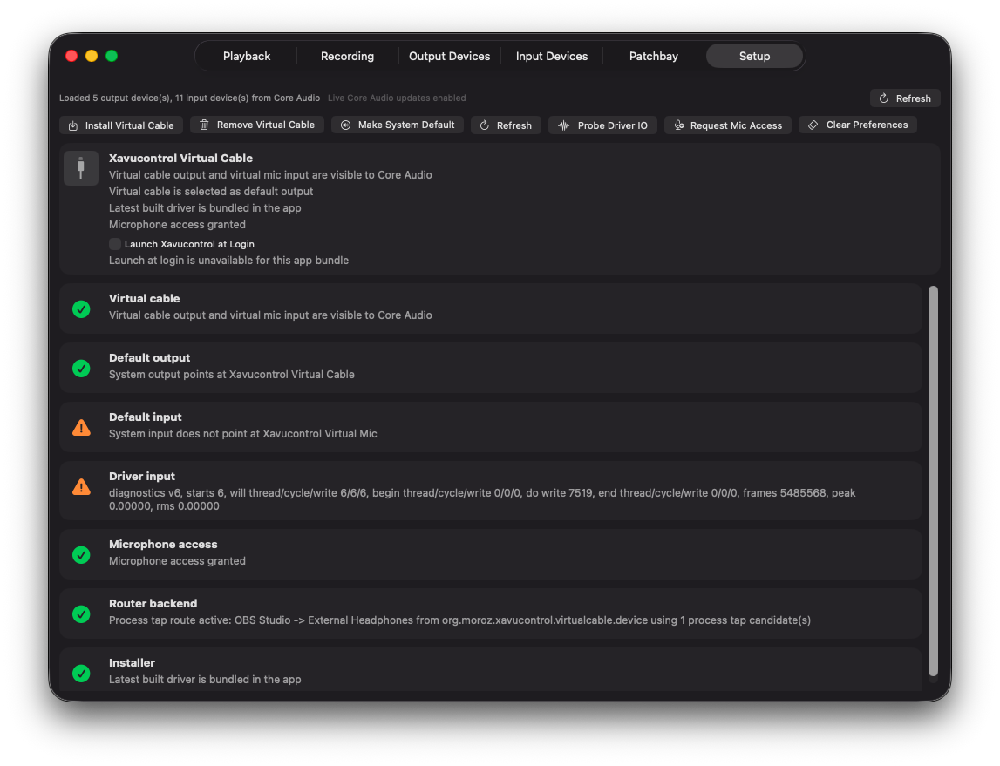

Per-app audio routing
Move browser audio to speakers, send a player to headphones, and keep each app on the output that makes sense.

Xavucontrolpavucontrol-inspired audio routing for macOS
Xavucontrol brings the Linux pavucontrol idea to Core Audio: per-application playback routing, multi-output fan-out, a virtual audio cable, a virtual microphone mixer, input monitoring, and a live patchbay view for macOS.
Native SwiftUI app. Source-available. Experimental beta.

Why pavucontrol for Mac?
macOS gives developers audio APIs, but users only get the controls an app chooses to expose. If a browser, music player, meeting tool, or small utility does not include an output selector, it follows the system default. Xavucontrol is built for people searching for a pavucontrol-like Mac app: one place to inspect streams, route app audio, and monitor what Core Audio is doing.
What it does
Move browser audio to speakers, send a player to headphones, and keep each app on the output that makes sense.
Duplicate one app's playback stream to two or more hardware output devices at the same time.
Mix selected microphones and selected playback streams into Xavucontrol Virtual Mic for calls, recording, and tests.
Use Listen On to check a microphone through a chosen output before joining a call or starting a recording.
See active applications, devices, virtual routes, monitor links, and microphone sources in one readonly graph.
Close the main window while the routing process keeps running in the background.
Audio pipeline
Screenshots





Download
Xavucontrol is distributed through GitHub releases. The project is still early beta and uses a bundled Core Audio HAL driver, so read the release notes before installing and expect changes while the audio pipeline matures.